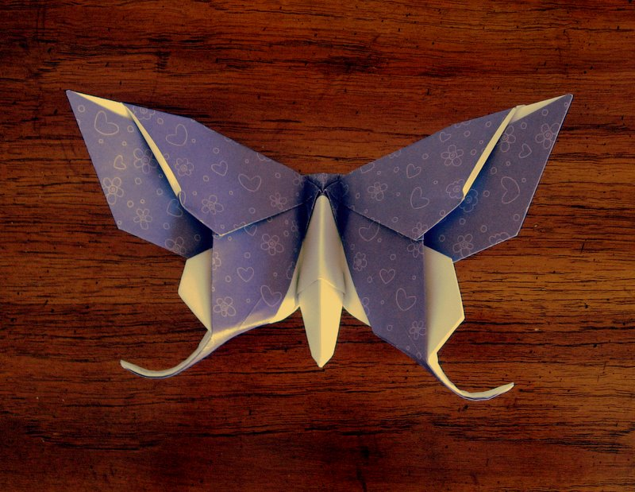
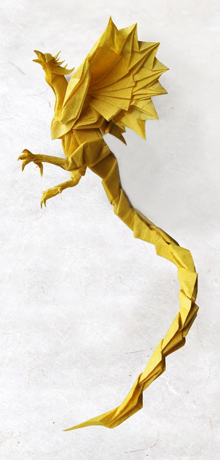

about me
ORAGAMI DESIGN
BUTTERFLY

- This origami butterfly is absolutely beautiful and looks even better with nice origami paper.
- The wings spread out nicely and the body comes up a little to give it a more realistic look.
- The head adds another dimension of realism and if you like,
- you can make and attach some antennas for a more complete look.
DRAGON

- Origami Dragons are very individual creatures.,
- Due to the many complexities of their wings and horns,
- Origami Dragons are able to contort their bodies in a specific form that is unique to them.
- While adult Origami Dragons may look the same at a base level,
- no two are exactly alike.